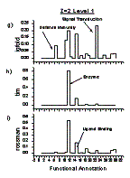
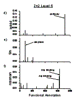
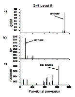
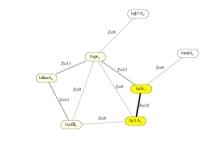

|
Boris E. Shakhnovich[1], Nikolay V. Dokholyan[2], Charles
Keywords: molecular evolution, structure-function, power laws.
1 Introduction
Using structural similarity clustering of protein domains: Protein Domain Universe Graph (PDUG), and a hierarchical functional annotation: Gene Ontology (GO) as two evolutionary lenses, we find that each structural cluster (domain fold) exhibits a distribution of functions that is unique to it. These functional distributions are functional fingerprints that are specific to characteristic structural clusters and vary from cluster to cluster. Furthermore, as structural similarity threshold for domain clustering in PDUG is relaxed we observe an influx of earlier-diverged domains into clusters. These domains join clusters without destroying the functional fingerprint. These results can be understood in light of a divergent evolution scenario that posits correlated divergence of structural and functional traits in protein domains from one or few progenitors.
2 Main Results
The main result of this work is a striking finding that the corollary relationship between structural evolution and acquisition of new function by protein domains necessitated by a divergent evolution scenario can be quantitatively observed on the PDUG. Looking at PDUG through a hierarchical description of structural comparisons we find that we can characterize different clusters by the ``functional fingerprint'' that they display. A functional fingerprint is the distribution of functions within a particular cluster. We find that this distribution is quite unique to a given fold family on levels of functional annotation with high specificity of description. If we relax the Zmin threshold, we can see an influx of protein domains into structurally similar clusters. Even with the influx of as many as one hundred percent of the earlier diverged domains into the ancestral cluster, the functional fingerprint is not destroyed (does not become random), but is complemented with the same and similar functions. This preservation of unique functional fingerprints through evolutionary dynamics further highlights the close relationship between structure and function necessitated by divergent evolution.
3 Figures and tables
Fig 1 (below) Functional fingerprints of folds. X-axis is the functional annotation category. Y-axis is the normalized number of proteins annotated with that function. (a-c) Functional annotation at the fifth level of GO ontology for Zmin = 9. Notably, each cluster has its own, distinct functional fingerprint that is observably different than those of other clusters. (d-f) At the fifth level of annotation after proteins joined their ancestral clusters, for Zmin= 2. The fingerprints are more diverse, however still differ significantly from each other. (g-i) At the first level of annotation with Zmin = 2, the fingerprints overlap significantly, and hard to distinguish one from the other
 .
Fig 2
A schematic picture of how protein domains diffuse into structural clusters and define them at different thresholds. Nodes represent protein domains, links represent structural similarity at above threshold. Thick line represents domains connected at Zmin = 15, dotted lines represent domains connected at Zmin = 11 and thin lines represent domains connected at Zmin=9. Domains inside PDUG have drastically different connectivity depending on the similarity threshold based on which we connect two nodes. It is evident that at a very high threshold Zmin=inf, all protein domains are orphans, i.e. they are connected to no other domains because their similarity is lower than the structural similarity threshold. At Zmin= 0 all protein domains are connected because the threshold is non-discriminatory. As we change the threshold, we observe orphans diffuse into larger clusters of sufficiently similar domains. As the evolutionary threshold Zmin is relaxed, proteins that were orphans and had no structural neighbors join their ancestral clusters. All proteins in PDUG have less that 25\% sequence homology to each other. In this figure, the domains that joined at Zmin=15 are yellow, at Zmin=11 are in beige and at Zmin=9 are white.
4 References and bibliography
Chothia, C. and A. M. Lesk (1986). "The relation between the divergence of sequence and structure in proteins." Embo J 5(4): 823-6.
Dietmann, S., J. Park, et al. (2001). "A fully automatic evolutionary classification of protein folds: Dali Domain Dictionary version 3." Nucleic Acids Res 29(1): 55-7.
Dokholyan, N. V., B. Shakhnovich, et al. (2002). "Expanding protein universe and its origin from the biological Big Bang." Proc Natl Acad Sci U S A 99(22): 14132-6.
Holm, L. and C. Sander (1996). "Mapping the protein universe." Science 273(5275): 595-603.
Murzin, A. G. (1998). "How far divergent evolution goes in proteins." Curr Opin Struct Biol 8(3): 380-387.
Teichmann, S. A., A. G. Murzin, et al. (2001). "Determination of protein function, evolution and interactions by structural genomics." Curr Opin Struct Biol 11(3): 354-63.
[1] Bioinformatics Department, Boston University, Boston, MA 02215, USA, E-mail: borya@acs.bu.edu
[2] Department of Biochemistry and Biophysics, University of North Caroline at Chapel Hill School of Medicine, Chapel Hill, NC 27599, USA E‑mail: dokh@med.unc.edu
[3] Bioinformatics Department, Boston University, Boston, MA 02215, USA, E-mail: delisi@acs.bu.edu
[4] Department of Chemistry and Chemical Biology, Harvard University, Cambridge, Ma 02138, USA E-mail: Eugene@belok.harvard.edu